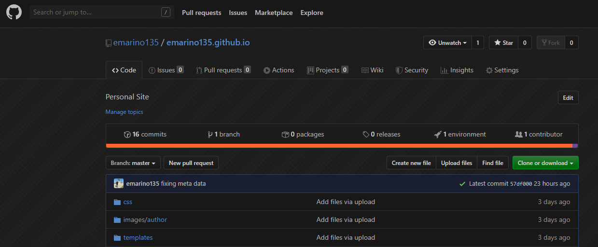
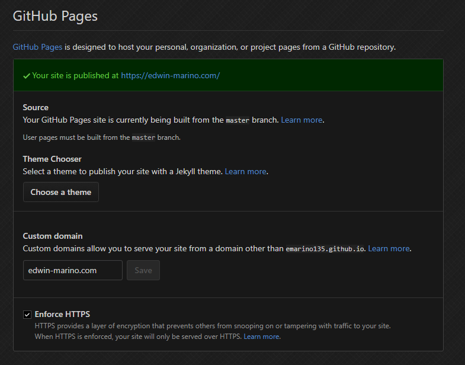
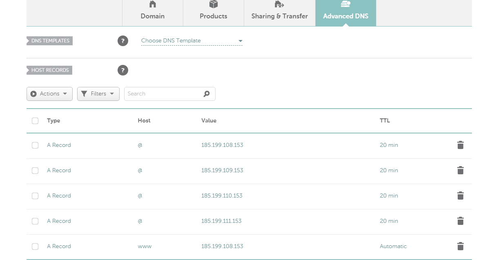

IMPORTANT Note : You can do Step 1 or Step 2 in any order but I think
doing it in this order to be the most streamlined way.
Also you can skip step one and just get a free web hosting
but you will have a website with a URL like
Username.github.io which is fine but I personally don't think
is as cool as having your own personalized URL
Step 1. Getting a Custom Domain
In order to get a custom domain you actually need to own a domain.
Which means paying money. But if you look in the right places you can
find domain names for cheap
I bough my domain for $8.88 a year which equates to about only
three quarters every month. Which I can easily find digging inbetween
my couch cushions
If you search for a Domain prices at a company like goDaddy.com that can buy
from them at X price that doesn't mean you can ONLY buy it from godaddy
Just think of domain providers as just brokers for facilitating a purchase
like being able to buy the same appliance at Walmart or Amazon.
Unless one company is offering you an extra service on top of a domain that
you believe is worth a mark up in price than I would take the cheaper option
For me when it came to finding the cheapest deals I went with namecheap
They also provide I really good whoIs protection so stuff like your personal
address and phone number are kept off a public database at no extra cost
Step 2. Getting FREE web hosting
Note: This only works for static pages as of right now. If you
wish to host a dynamic website that you need to fork over a pretty penny
Static DOES NOT mean you can't add responsive visual effects with CSS and Javascript
Unless you're trying to build a live e-commerce store like Amazon or a social media
webpage like Instagram than you don't need a dynamic page
Your going to need to have a github account which is free and easy to set up.
Than your going to create a new repository and nameing it "yourusername.github.io"
So if your username is emarino135
Than your repository name would look like:
emarino135.github.io

Once that is done you go to your settings and pick a theme
It really don't matter what theme
I picked a hackerish looking terminal theme under Theme Chooser
It's really just to initilze it and for you to test the website is working
You can make your own theme later with some html css and javascript
Also if you have a custom domain you can put it inside the Custom domain box

To set up the fully link the custom domain to git pages
and to accept formats like "www." or "http" or "https"
or whats called an apex domain like just "google.com" than
you need to go to your domain providers website and go under advance DNS settings tab
and input the IP addresses provided below. These are the address for github pages so it can
properly find your webpage and display it

Keep in mind that sometimes this process is not instantanously
From my experience I waited 30 mins for my custom domain to finally sync
It was tempting to say github pages was broken and wasnt working
and than suddenly I could find my website using my phone